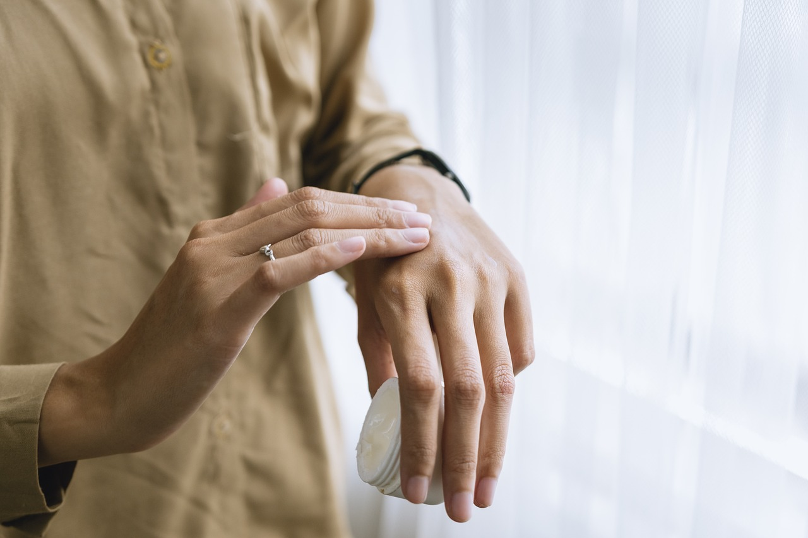

* Cuidar da pele diariamente é essencial para mantê-la saudável e protegida contra agressões externas, como poluição e raios solares. A rotina de skincare ajuda a prevenir o envelhecimento precoce, mantendo a pele hidratada e com uma aparência radiante. Além disso, a limpeza adequada remove impurezas e evita problemas como acne e cravos. O uso de protetor solar é indispensável para evitar manchas e danos causados pelo sol. Produtos como hidratantes e séruns nutrem a pele, proporcionando maciez e viço. Investir em skincare é um ato de autocuidado que melhora a autoestima e o bem-estar.
"Cuidar da sua pele é mais do que vaidade...é um ato diário de amor próprio, onde cada gota de hidratação reflete o respeito que você tem por si mesmo."♥


Créditos: